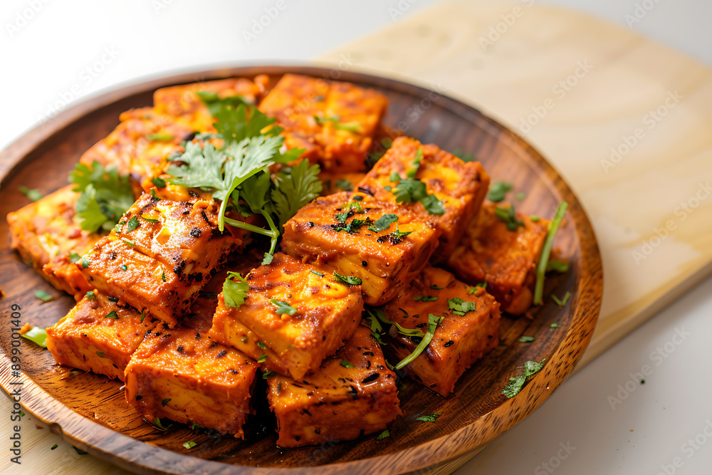

Famous Foods of Himachal Pradesh
Chana Madra

Chana Madra Recipe:
- Ingredients:
- 1 cup chana (chickpeas), soaked overnight
- 2 tablespoons ghee
- 1 teaspoon cumin seeds
- 1 onion, finely chopped
- 1 teaspoon ginger-garlic paste
- 1 cup yogurt, whisked
- 1 teaspoon coriander powder
- 1/2 teaspoon turmeric powder
- 1/2 teaspoon red chili powder
- Salt to taste
- Fresh coriander for garnish
- Instructions:
- Heat ghee in a pan and add cumin seeds.
- Add onions and cook until golden brown.
- Add ginger-garlic paste and sauté for a minute.
- Add soaked chana and cook for a few minutes.
- Add yogurt, coriander powder, turmeric powder, red chili powder, and salt.
- Simmer until chana is cooked and the gravy thickens.
- Garnish with fresh coriander and serve hot with rice or roti.
Dham

Dham Recipe:
- Ingredients:
- 1 cup rice
- 1/2 cup urad dal (split black gram)
- 1/4 cup chana dal (split chickpeas)
- 1/4 cup curd
- 1 teaspoon mustard seeds
- 1 teaspoon cumin seeds
- 1 green chili, chopped
- 1 tablespoon ghee
- 1/2 teaspoon turmeric powder
- Salt to taste
- Fresh coriander for garnish
- Instructions:
- Soak rice, urad dal, and chana dal in water for 2 hours.
- Drain and grind into a coarse paste.
- Heat ghee in a pan and add mustard seeds and cumin seeds.
- Add chopped green chili and sauté for a minute.
- Add the dal mixture, turmeric powder, and salt.
- Cook until the mixture thickens.
- Mix in curd and cook for a few more minutes.
- Garnish with fresh coriander and serve hot.
Siddu

Siddu Recipe:
- Ingredients:
- 2 cups whole wheat flour
- 1/2 cup chopped walnuts
- 1/2 cup raisins
- 1/4 cup jaggery, grated
- 1 teaspoon fennel seeds
- 1/2 teaspoon cardamom powder
- 1/4 teaspoon baking soda
- Water as needed
- Instructions:
- Mix whole wheat flour, fennel seeds, cardamom powder, and baking soda in a bowl.
- Add walnuts, raisins, and jaggery. Mix well.
- Add water gradually to form a soft dough.
- Divide the dough into small balls and flatten them slightly.
- Steam the flattened dough in a steamer for about 15-20 minutes.
- Serve hot with ghee or butter.